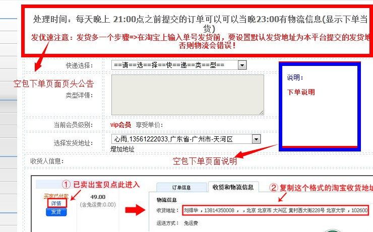

| 空包业务设置 |
|
空包业务设置主要是用于对系统空包业务的相关综合性设置，不过多解释；请注意以下几点： 一、使用默认购买佣金：如果此项选择为“是”时，在各快递类型的空包作为上线的应获得佣金设置就不再起作用， 而是所有类型的空包统一按默认佣金比例进行计算购买佣金 二、空包缺货提醒设置：设置此项信息，如果系统内可用空包不足这个数时，会在进入后台时给出提醒信息 三、1级上线是指购买空包会员的直接上线会员；2级上线是指直接上线的上线会员，以此类推。 四、购买佣金模式：是指几个层级的上线可以获得佣金，例如：2级模式，是指购买会员的直接上线和直接上线的上线可以获得佣金 系统最高支持4级模式，模式层数设置在“会员管理”-》“会员设置”中完成 |
| 单号业务设置 |
|
一、与空包业务设置类似，增加业务开关按钮，如果开启单号业务，那么在前台页面中就可以看到单号相关操作页面；
同时后台的"业务管理"-》“单号管理”就可以设置单号类型及管理单号信息 |
| 小号业务设置 |
|
一、与空包业务、单号业务设置类似，增加业务开关按钮，如果开启小号业务，那么在前台页面中就可以看到小号相关操作页面；
同时后台的"业务管理"-》“小号管理”就可以设置小号类型及管理小号信息 |
| 页面设置 |
|
该模块主要是对于前台的空包下单等页面一些备注信息自定义内容；简单介绍2个，其他依次类推： 一、空包下单页面页头公告、空包下单页面说明：是指前台页面-会员中心-》空包下单-》如图：  |